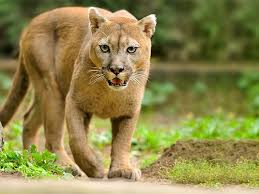

puma
Puma concolor
Distribucion
El puma, león de montaña, león o pantera (Puma concolor)2 es un mamífero carnívoro de la familia Felidae nativo de América.
Este gran felino vive en más lugares que cualquier otro mamífero salvaje terrestre del continente, ya que se extiende desde el Yukón, en Canadá, hasta el sur de la cordillera de los Andes y la Patagonia, Argentina y Chile en América del Sur. El puma es adaptable y generalista, por lo que se encuentra en los principales biomas de toda América. Es el segundo mayor félido en el Nuevo Mundo, después del jaguar, y el cuarto más grande del mundo, junto con el leopardo y después del tigre, el león y el jaguar. Su tamaño es mayor que el del leopardo de las nieves, aunque está más emparentado con los pequeños felinos, ya que, a diferencia de los grandes felinos del género Panthera, que pueden rugir, el puma ronronea como los felinos menores.
Como cazador y depredador de emboscada, el puma persigue una amplia variedad de presas. Su principal alimento son los ungulados como el ciervo, en particular en la parte septentrional de su área de distribución, pero también caza camélidos como el guanaco y especies tan pequeñas como insectos y roedores. Prefiere hábitats con vegetación densa durante las horas de acecho, pero puede vivir en zonas abiertas.
Biología
Los pumas son felinos esbeltos y ágiles. La talla adulta de pie es de alrededor de 60 a 80 cm de altura en los hombros. La longitud de los machos adultos es de alrededor de 2,4 m de largo de la nariz a la cola, aunque en general oscila entre 1,5 y 2,75 m.131415 Los machos tienen un peso promedio de entre 53 a 72 kg. En casos raros, algunos pueden llegar a pesar más de 120 kg. El peso promedio de las hembras está entre 34 y 48 kg.16 El tamaño del puma es más pequeño cerca del Ecuador, y mayor en las poblaciones más cercanas a los polos.17
La cabeza del puma es redonda y las orejas están erguidas. Posee poderosas patas delanteras, cuello, mandíbula y colmillos que le sirven para atrapar y matar grandes presas. Tiene cinco garras retráctiles en las patas delanteras, útiles para aferrarse a la presa, y cuatro de las patas posteriores.18
Enlaces a otras páginas
 Inicio
Inicio Vicuna
Vicuna Oso de anteojos
Oso de anteojos